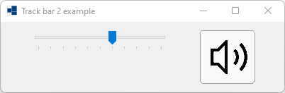
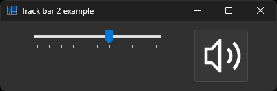
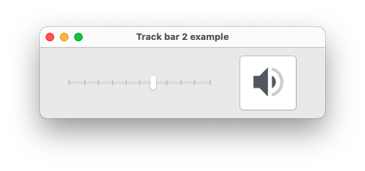
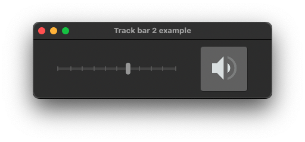
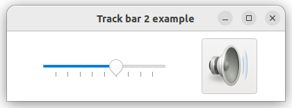
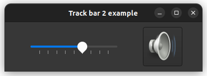

|
xtd
0.2.0
|
Loading...
Searching...
No Matches
track_bar2.cpp
demonstrates the use of xtd::forms::track_bar control.
- Windows
- 

- macOS
- 

- Gnome
- 

#include <xtd/forms/application>
#include <xtd/forms/button>
#include <xtd/forms/button_images>
#include <xtd/forms/form>
#include <xtd/forms/track_bar>
#include <xtd/startup>
using namespace xtd::forms;
public:
form1() {
client_size({400, 100});
controls().push_back_range({track_bar1, button1});
text("Track bar 2 example");
track_bar1.auto_size(false);
track_bar1.bounds({40, 10, 200, 80});
track_bar1.set_range(0, 100);
track_bar1.tick_frequency(10);
track_bar1.value_changed += [&] {
if (muted && track_bar1.value()) muted = false;
if (!muted || track_bar1.value()) volume = track_bar1.value();
if (track_bar1.value() == 0) button1.image(button_images::from_name("audio-volume-muted", xtd::drawing::size {64, 64}));
else if (track_bar1.value() < 30) button1.image(button_images::from_name("audio-volume-low", xtd::drawing::size {64, 64}));
else if (track_bar1.value() < 80) button1.image(button_images::from_name("audio-volume-medium", xtd::drawing::size {64, 64}));
};
track_bar1.value(60);
button1.bounds({280, 10, 80, 80});
button1.click += [&] {
muted = !muted;
track_bar1.value(muted ? 0 : volume);
};
}
static auto main() {
application::run(form1 {});
}
private:
bool muted = false;
int volume = 0;
track_bar track_bar1;
button button1;
};
startup_(form1::main);
Stores an ordered pair of integers, which specify a height and width.
Definition size.h:31
Represents a window or dialog box that makes up an application's user interface.
Definition form.h:52
#define startup_(main_method)
Defines the entry point to be called when the application loads. Generally this is set either to the ...
Definition startup.h:162
The xtd::forms namespace contains classes for creating Windows-based applications that take full adva...
Definition about_box.h:13
Generated on Sun Nov 12 2023 10:26:57 for xtd by Gammasoft. All rights reserved.